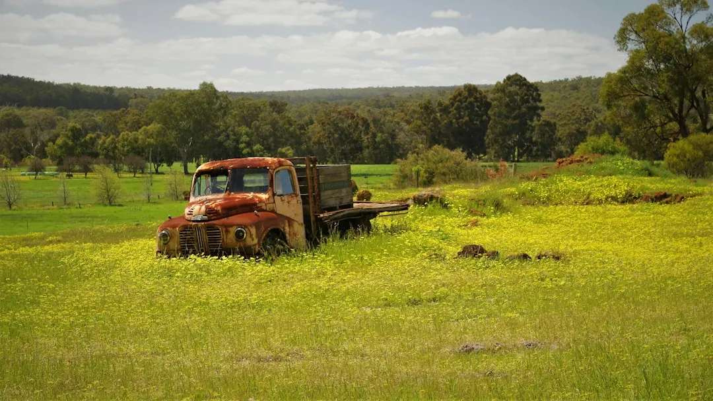

Landscaping decisions in Perth depend on the block as much as the chosen plants or materials. Sandy soil can drain quickly, while heat, slope, access, water supply and hardscape requirements change preparation and construction. A useful quote should identify soil improvement, base preparation, reticulation zones, retaining requirements and included finishes. Compare like with like, check council and engineering questions where relevant, and request a site-specific scope before choosing a contractor.
When comparing landscaping services perth homeowners should begin with the ground, access and intended use of the garden, then match the design, preparation and construction work to those conditions.
Landscaping Services Perth Explained
Landscapers Perth describes Perth gardens as projects shaped by sandy soil, summer heat and local water rules. Those conditions affect how beds are prepared, how turf is established, how paving bases are compacted and how irrigation is divided between lawns and garden beds.
Before requesting a quote, record the rough size of the work area, access for machinery, slope, shade, existing trees and whether the property uses bore or scheme water. These details help a contractor understand the job beyond a square metre measurement. A flat block with easy access may need a different preparation plan from a sloping site where retaining is part of the work.
- Mark the areas intended for lawn, planting, paving and entertaining.
- Note where water needs to reach and whether separate lawn and bed zones are likely.
- Photograph access points, existing levels, trees and any boundary that may affect construction.
Match the service to the decision
A full garden makeover is only one possible scope. Landscape design is useful when the layout, planting areas and hard surfaces need to be resolved before construction is priced. Garden landscaping can combine beds, turf, plants, mulch and edging, while lawn installation focuses on prepared ground and grass selected for the available sun, shade and watering.
Reticulation deserves early attention because pipes are best laid before turf, paving and mulch. Ask how the system will be divided into zones, where the controller sits, and whether rain sensors or the property's water source affect the proposed arrangement. For a sloping or sandy block, retaining may be necessary before other garden elements can be finished.
Artificial grass, real turf, paving and retaining each create different preparation questions. The right comparison is not simply which finish looks best. It is which option suits the ground, maintenance expectations, drainage, access and intended use of the space.
Read a quote line by line
Price follows the amount of preparation and construction included, not just the visible finish. On Perth sand, ask whether beds and turf areas include soil conditioner or organic matter. For paving, check what is allowed for excavation, compaction and a well-drained base. If levels change across the block, confirm whether retaining, disposal and access are included.
Two quotes can appear different because one separates preparation, materials and installation while another groups them together. Ask each contractor to describe the same scope in the same order:
- Site preparation, including soil improvement and removal of unwanted material.
- Levels, retaining, drainage and any base work needed for hard surfaces.
- Reticulation layout, controller details and lawn versus garden-bed zones.
- Plants, turf, mulch, edging, paving and other visible finishes.
- Items excluded, assumptions about access and any approval or engineering questions.
For a clearer comparison, keep the brief consistent and ask questions about any allowance that is unclear rather than choosing the shortest quote.
Perth conditions change the practical brief
Local conditions matter when they create a different design or construction problem. Coastal locations such as Cottesloe and Scarborough may need a planting discussion that accounts for salt wind. Kalamunda sites can involve hills and slopes. Newer estates in Baldivis or Ellenbrook may begin with bare builder's sand, making preparation a central part of the scope rather than a minor detail.
These examples are useful prompts, not substitutes for a site inspection. Ask how the proposed plants, turf, paving base and retaining approach respond to the actual block. A garden in Joondalup, Applecross, Rockingham or Wanneroo still needs its own assessment of access, shade, slope and water supply. Location helps frame the question, while the site determines the work.
Where a retaining wall sits near a boundary, check with the local council about permits and engineering, and speak with neighbours early if the wall is shared. The appropriate requirements depend on the project and should be confirmed before construction is arranged.
A practical handover from enquiry to finished garden
Begin with a defined job, such as a makeover, new lawn, artificial grass, paving, retaining wall or reticulation installation. Add the suburb, rough dimensions, photographs and any plans available. A concise brief gives the contractor enough context to ask better follow-up questions.
When proposals arrive, compare the same items across each document. Check that the soil work, turf preparation, base construction, irrigation zones, retaining and final finishes are visible in the scope. Also ask which licences and insurance apply to the work, and request current certificates where the project involves multiple trades or work near a boundary.
For a separate discussion of the financial side of planning a local project, see the guide to landscaping costs in Perth. The next useful action is to turn the site notes into a written list of inclusions and questions before requesting a quote.
- Define the job. Choose the main work, note the rough area and identify whether the project includes lawn, planting, paving, retaining or irrigation.
- Record site conditions. Add access, slope, shade, existing trees, water source and photographs so the quote reflects the actual block.
- Check approvals. Ask the local council and relevant professionals about permits, engineering or boundary issues where retaining or other construction may require it.
- Compare scopes. Place quotes side by side and check preparation, materials, irrigation, finishes, exclusions and assumptions before deciding.
| Choice | Best comparison point | Question to ask |
|---|---|---|
| Real turf | Soil preparation, grass selection and watering | How will the sand be prepared, and how will sun, shade and reticulation affect the lawn? |
| Artificial grass | Base preparation, drainage and intended use | What ground preparation and drainage work is included before installation? |
| Limestone retaining | Levels, site conditions and boundary position | Are council, engineering or shared-boundary questions relevant to this wall? |
| Block retaining | Design, finish and construction requirements | How will the wall suit the slope, access and surrounding garden finishes? |
| Paving or hardscaping | Excavation, compaction and drainage | What base is included for a firm, well-drained surface on this block? |
Common questions
Why can landscaping quotes vary so much across Perth? The scope may include different levels of soil improvement, access work, paving-base preparation, retaining or irrigation. Comparing each line item is more useful than comparing a single rate.
Should reticulation be planned before turf and paving? Yes, the published guidance says reticulation pipes are best laid before turf, paving and mulch. Ask how lawn and garden-bed zones, the controller and the water source are treated in the design.
What should I ask about a retaining wall near a boundary? Ask the local council about permits and engineering, confirm the wall's position, and speak with neighbours early where the boundary is shared.
What information should accompany a quote request? Include the suburb, job type, rough size, access details and any useful photographs or plans. Also describe slope, shade, existing trees and whether water comes from a bore or scheme supply.
Is landscaping usually quoted by the hour or by the job? Construction work is generally discussed as a whole job, while hourly pricing can suit maintenance and small tidy-ups. Ask how the proposed pricing relates to the exact work requested.
This guide covers Perth garden planning, site preparation, service choices, quote comparison and approval questions.